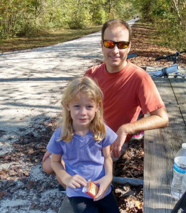
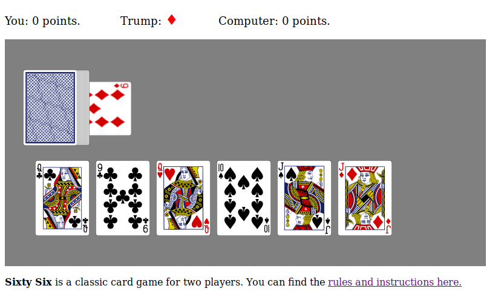

Elliott Professor of Mathematics
Math
& CS Department
Hampden-Sydney College
Office: Pauley 301
E-mail: blins@hsc.edu
I’ve been a professor of mathematics at Hampden-Sydney College since 2008. I live in the Richmond area with my family.
I like to run, but not very fast. Two of my favorite places to run are High Bridge State Park and Pocohantas State Park. These are also great places for a bike ride.
I love classic card games like hearts, cribbage, and 500. I also like programming. A few years ago I started making card games that you can play online against the computer. The best one I’ve made so far is a version of sixty-six, which happens to be one of the best two-player card games ever. Click on the picture below to try it.
